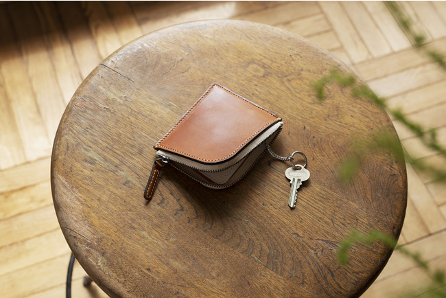

TODAY'S TOPIC
思い出のランドセルをリメイク
昨日は入園•入学のお話をしましたが、そういう季節でもあれば、卒業の季節でもありますね。(ちょっと過ぎたけど。)卒業後に使われなくなってしまったランドセル、、でも思い出がいっぱいで捨てられない、、そんなランドセルをリメイクしてくれるサービスがあるんですね！
img source -(https://prtimes.jp/main/html/rd/p/000000232.000007557.html)
「株式会社土屋鞄製造所」が行っているリメイクサービスですが、いろいろなものにランドセルを変身させてくれるみたいです。
img source -(https://prtimes.jp/main/html/rd/p/000000232.000007557.html)
これはタペストリーにリメイクされています。めちゃくちゃ可愛い。。

img source -(https://prtimes.jp/main/html/rd/p/000000232.000007557.html)
キーケースやペンケースにもリメイクしてくれるみたいです。これは大人になってもずっと使えそう！
これらのリメイクは「株式会社土屋鞄製造所」で買ったランドセル限定ということなので、入学時もそこでランドセルを買わなくてはいけないようです。ただ、ランドセルってとっても頑丈で長持ちするからできる限り長い期間使えたら良いですね!